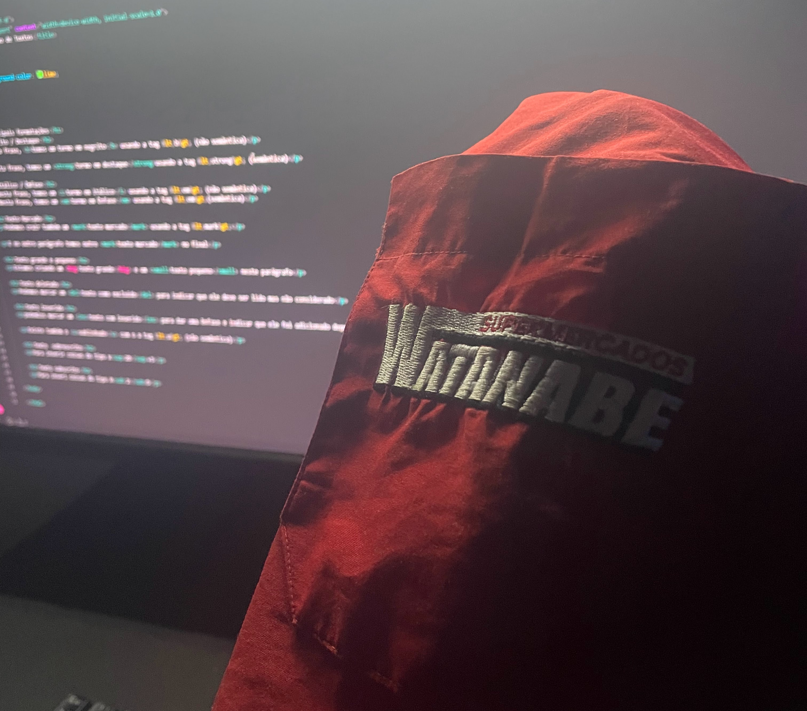
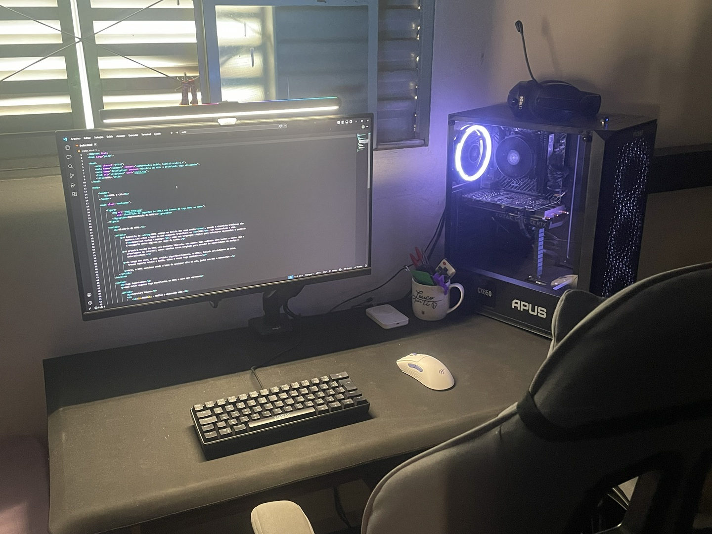
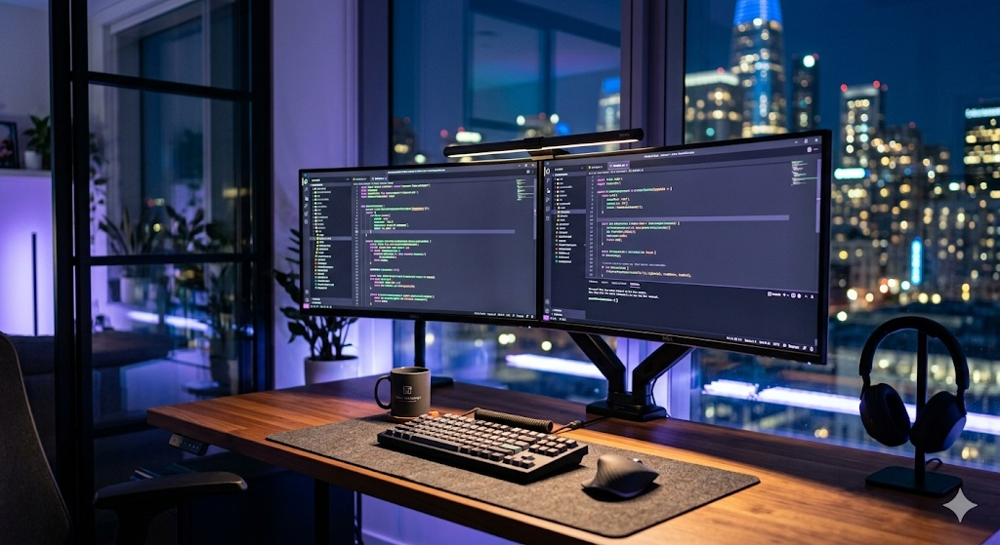

- <header> - Cabeçalho da página ou seção
- <main> - Conteúdo principal
- <section> - Seções do conteúdo
- <article> - Conteúdo independente
- <footer> - Rodapé
- <figure> - Agrupa imagem + legenda
- <figcaption> - Legenda da imagem
Minha Trasição de Carreira
-
De onde vim
Trabalhei com prevenção de perdas no Supermercado Watanabe, desenvolvenodo atenção aos detalhes e responsabilidade.
-
Momento de virada
Descobri a programação e comecei a estudar HTML, CSS e tecnologia por conta própria.
-
Para onde vou
Quero me tornar um Desenvolvedor Web e trabalhar criando interfaces modernas e funcionais.


